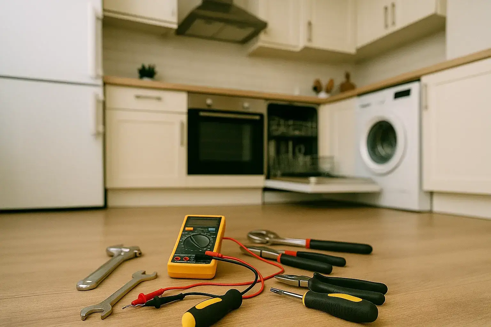
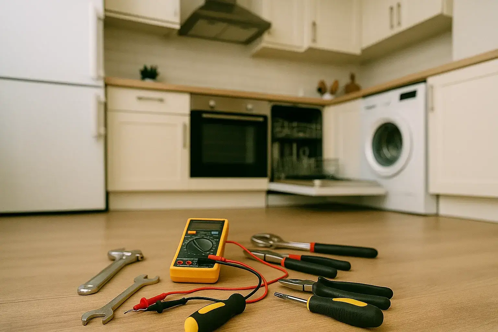

Reparación de Lavadoras
¿Tu lavadora no centrifuga o hace ruidos molestos? La reparamos al instante, con garantía y profesionalidad en Madrid.
Ver más


¡No entres en pánico! Reparación express de electrodomésticos INDESIT en Madrid HOY MISMO. Técnicos certificados listos para actuar en minutos. Sin esperas. Sin sorpresas.
📞 ¡Llámanos ahora y repara! 📋 Solicita Visita 

Ofrecemos un servicio técnico personalizado en Madrid y garantizamos soluciones a medida para tu electrodoméstico INDESIT. Que una avería no sea un problema para ti.
Reparamos tu electrodoméstico INDESIT en tu domicilio y, si es necesario, transportamos el electrodoméstico de manera segura.
Solucionamos cualquier problema con tu electrodoméstico INDESIT en menos de 24 horas en Madrid.
Desplazamiento gratuito si realizamos la reparación y presupuesto claro antes de comenzar.
Reparamos cualquier electrodoméstico, de todas las marcas, incluso blancas, con máxima profesionalidad.
Todos nuestros trabajos cuentan con garantía por escrito para tu tranquilidad.
Reparamos electrodomésticos INDESIT y otras marcas en Madrid. ¿Qué necesitas?
¿Tu lavadora no centrifuga o hace ruidos molestos? La reparamos al instante, con garantía y profesionalidad en Madrid.
Ver más
¿Tu secadora no seca bien o vibra demasiado? Nuestros técnicos en Madrid lo solucionan de forma rápida y fiable.
Ver más¿Tu lavavajillas no limpia correctamente o pierde agua? Lo dejamos funcionando a la perfección en Madrid.
Ver más
¿Tu frigorífico no enfría o hace ruidos extraños? Nuestro equipo en Madrid lo repara rápido y con total garantía.
Ver más
¿Tu congelador no congela o hace ruidos extraños? Nuestro servicio técnico en Madrid lo arregla de inmediato.
Ver más
¿Tu horno no calienta o se apaga solo? Lo reparamos rápido y de manera profesional en Madrid.
Ver más
¿Tu vitrocerámica no calienta o funciona de manera irregular? La dejamos operativa y segura en Madrid, sin complicaciones.
Ver más
¿Tu campana no aspira como antes o hace ruidos extraños? Nuestro equipo en Madrid la deja como nueva, rápido y seguro.
Ver más"Mi lavadora se estropeó un domingo y vinieron el mismo día. ¡Increíble servicio y muy profesionales!"
"Presupuesto claro y sin sorpresas. Mi nevera como nueva en menos de 24 horas. ¡Recomendadísimos!"
"Tenía prisa por mi horno y lo arreglaron rapidísimo. ¡Un alivio encontrar un servicio tan eficaz!"
"Excelente atención y rapidez. Mi lavavajillas dejó de gotear y lo solucionaron en el mismo día. ¡Muy recomendable!"
"No podía creer lo rápido que arreglaron mi horno. Profesionales, educados y transparentes con el presupuesto. ¡5 estrellas!"